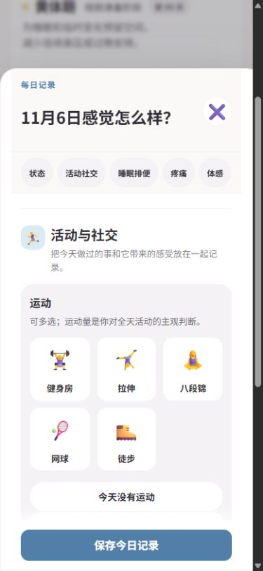
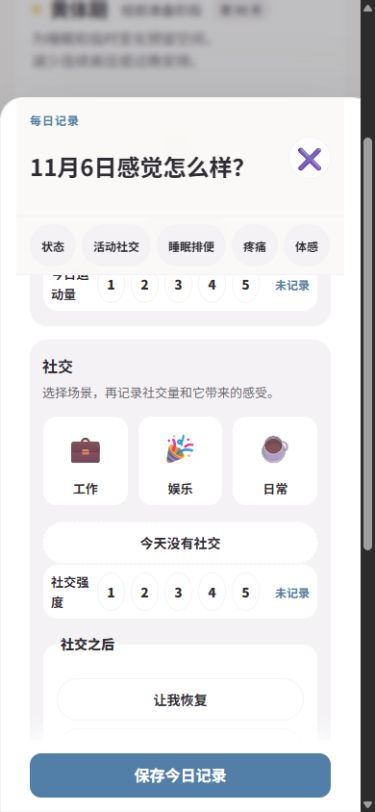
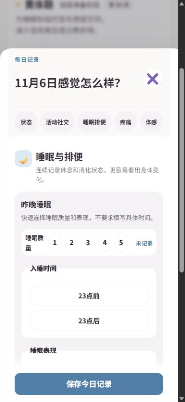
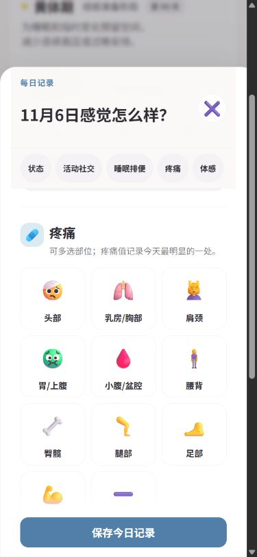

周期生活助手 / Period
A little closer to yourself.

Everyday observations, connected.
A daily companion for noticing patterns in your body and your everyday life. Cycle information, feelings and routines share one quiet space.
A cycle is only part of the picture. Mood, energy, sleep and activity add context. The app brings these observations together through Today, Calendar and Trends.
- MY ROLE
- Vibe coding
- TECH STACK
- HTML, CSS, JavaScript, PWA
Start with how you feel.
An emoji-led mood selector gives the daily record a clear starting point. Energy and stress follow as separate ratings, keeping different kinds of observations distinct.
Notice
Start with the Today view.
Record
Move through grouped daily observations.
Reflect
Explore calendar and trend views.
Room for the everyday.
The daily form separates state, activity and social life, sleep and digestion, pain and physical sensations into navigable groups.
A day is more than a single feeling.
Movement, connection, rest and physical sensations each have their own place. Explore the daily record through four complementary views.
Movement, in your own terms.
Choose from gym sessions, stretching, Baduanjin, tennis and hiking. Multiple selections let different activities coexist, while a separate rating captures the overall amount of movement.

How did connection feel?
Work, leisure and everyday interactions sit alongside social intensity and the feeling afterwards: restorative, neutral or draining. Context matters as much as quantity.

Give rest a little attention.
Sleep quality and bedtime are recorded separately. Quick choices for sleep patterns keep the form approachable without requiring an exact sleep schedule.

Make physical sensations specific.
Illustrated body-area choices make it possible to record more than one location. Pain intensity, characteristics and responses provide further detail in the same flow.
